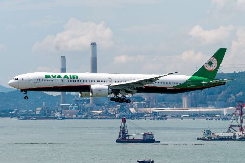

EA
EA
Company
Founded 8 March 1989; first flight 1 July 1991. Alliance: Star Alliance (joined June 2013). Fleet as of 1 September 2026: 89 aircraft. Pilot base: Taipei (Taiwan).
- Destinations
- 66
- Annual passengers
- 13,326,018
Company details6 facts · Fleet · Sources
- Founded
- 8 March 1989
- First flight
- 1 July 1991
- Alliance
- Star Alliancejoined June 2013
- Aircraft in service
- 89 aircraft1 September 2026
- Destinations
- 66including cargo-only destinations · 1 September 2026
- Annual passengers
- 13,326,0182025
Fleet6 types · 1 September 2026
- B777-300ER32 aircraft
- B787-99 aircraft
- B787-1013 aircraft
- A330-3009 aircraft
- A321-20017 aircraft
- B777F (freighter)9 aircraft
SourcesEVA Air, “Company Chronicle”EVA Air, “EVA Values”EVA Air, “EVA Air Fleet”EVA Air, “Main Business and Services”EVA Air, “Operational Data”